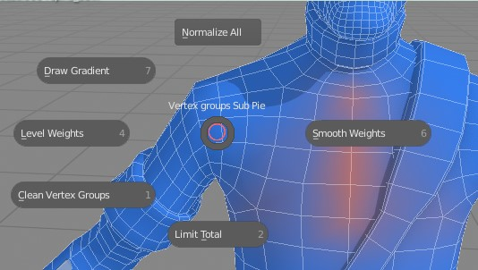
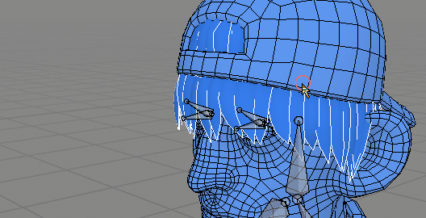
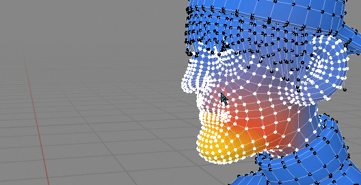

Most of those tools support symmetry and normalization.
To disable mirroring on any of those tools - disable global 'Mirroring' checkbox.
 Weight Tools sub pie menu
Normalize All¶
Similar to build-in Blender Normalize(All), but works with symmetry (it will normalize selected vertices and corresponding symmetrical vertices on other side of mesh - even if only one side is selected).
Draw Gradient¶

Drawing gradient executed from 'CTRL + D' hotkey
You can draw weight gradient for active vertex group. Similar gradient will be applied to symmetrical vertex group if global 'Mirroring' is enabled
Blend Modes:
- Replace - Replace existing weights with gradient
- Add - add gradient to existing weights
- Substract - substract gradient from existing weighs
Gradient Type:
- Gaussian - smooth gradient
- Ease in/out - sharper transition
Gradient falloff - move gradient weights more toward the beginning or end of line.
Smooth Weights¶
Same as build in Blender Smooth weights, but it is modal, works with symmetry and have option for Normalization of result.
Level Weights¶
 Increasing contrast on jaw bone, with 'Levels Weights'
Same as build in Blender Level weights, but it is modal, works with symmetry and have option for Normalization of result. You can adjust weight offset and gain with MMB Scroll and Shift + MMB Scroll respectively.
Clean Vertex Groups¶
Same as Blender's Clean Vertex groups - remove vertex groups from vertex if its weight is below threshold (its here for convenience)
Limit Total¶
Same as Blender's Limit Total - Limit number of Weights per Vertex (its here for convenience)